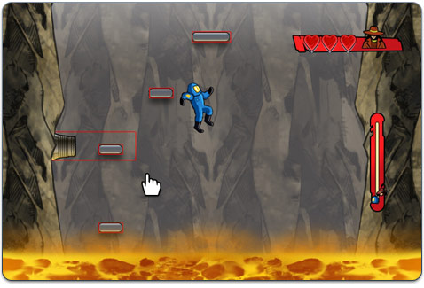

15 |
Progreso del juego |
 |
|
Revisión de tu avance
Para revisar tu conteo de Reputation Points (Puntos de reputación) y cuántas Hint Coins (Monedas para sugerencias) tienes, abre Agent/Journal (Agente/Diario) en el menú del ACME Phone (Teléfono ACME).
El caso se complica mucho, así que es bueno mantener un registro de lo que has averiguado en tu investigación. Puedes revisar todo lo que has logrado hasta ahora en la pestaña Journal (Diario).
Revisa la pestaña Messages (Mensajes) para escuchar tus mensajes de nuevo.
Atrapar al villano
¡Por fin! ¡Has logrado localizar al villano! ¡Pero ahora debes atraparlo o atraparla antes de que la cámara se llene de magma y la isla vuelve por los aires!

Debes perseguir al villano saltando de plataforma en plataforma. Puedes mover a tu personaje a la izquierda o a la derecha mientras está en el aire usando .
El villano tiene tres vidas. Cada vez que saltes desde una plataforma y alcances al villano, perderá una vida. Por lo tanto, para ganar la partida debes alcanzar al villano tres veces.
Tú también empezarás con tres vidas. Cada vez que choques con un obstáculo perderás una vida y se reducirá tu velocidad. Si pierdes las tres vidas, ¡se acabó el juego!
Los trampolines te dan más impulso, ¡y eso puede ser muy útil cuando persigues malhechores!
Ten cuidado con las plataformas: algunas se mueven e incluso se rompen.
¿Hemos mencionado los géiseres? Se encuentran en la pared y pueden cambiar tu trayectoria.
¡Buena suerte, Detective!
|
 |
 |
 |